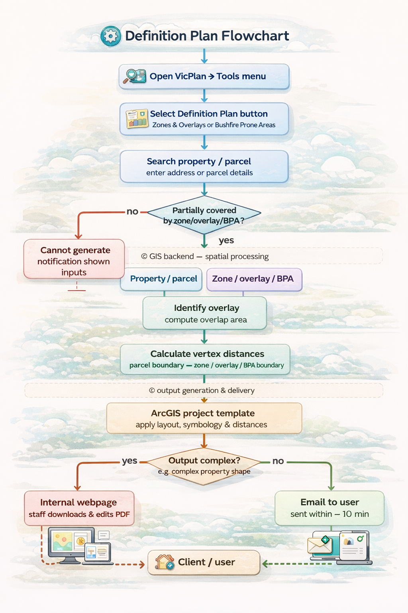
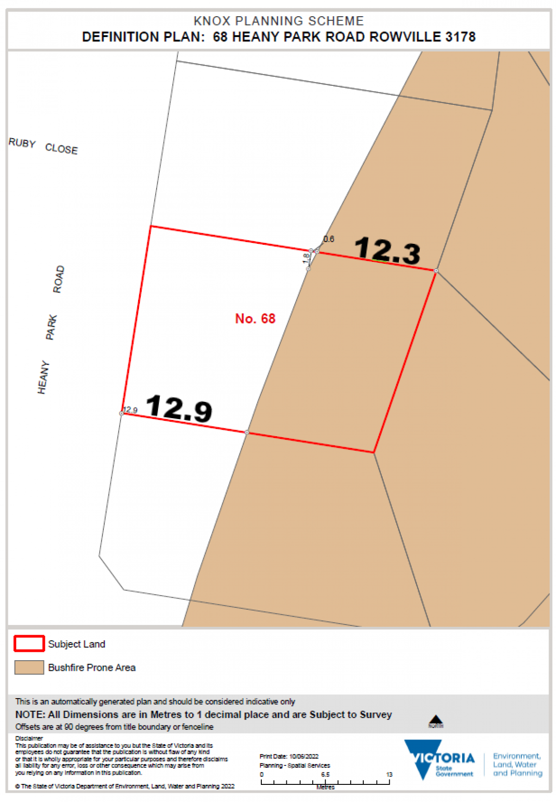

The VicPlan Definition Plan project involved the comprehensive migration and optimization of critical geoprocessing tools from legacy environments to the modern ArcGIS Pro 3.x framework. This work was essential for maintaining Victoria's planning scheme amendment capabilities.


Example of the optimized planning scheme tool interface.
Successful transition to a modern GIS environment ensured the continuity of the state's planning operations and provided mapping teams with more reliable, higher-performance tools for daily spatial data management tasks.